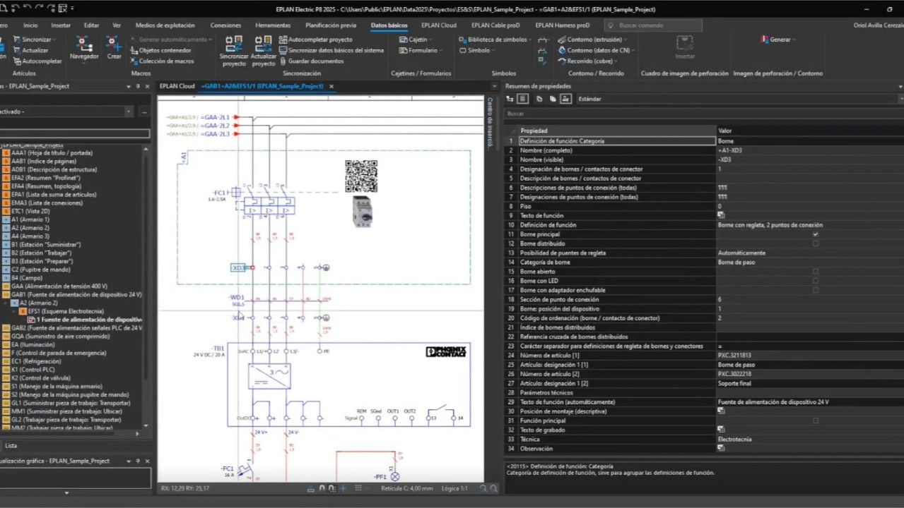

Introducció al Disseny d'Esquemes Elèctrics amb EPLAN
Curs 2025/2026 · David Mallén Julve
1. Fonaments de l'enginyeria automatitzada
1.1. Què és l'enginyeria automatitzada?
L'ús de programari com EPLAN permet passar del simple dibuix a la gestió de dades.
Entre les seues principals capacitats trobem:
- Gestió integral de projectes electrotècnics.
- Generació automàtica de llistats de materials.
- Integració amb sistemes de fabricació de quadres.
1.2. L'entorn de treball
Abans de començar, cal configurar els recursos següents per a treballar correctament:
- La biblioteca de símbols basada en la normativa IEC.
- El format de caixetí normalitzat per al centre.
- La graella de connexions per a l'ús de l'autoconnecting.
1.3. Exemple de muntatge industrial
A continuació es mostra una imatge d'un quadre elèctric real per identificar els components que dibuixarem:

Imatge sota llicència Creative Commons (CC)
2. Treball amb EPLAN
2.1. Inserció de components pas a pas
Per a dibuixar el nostre esquema seguirem aquest ordre:
- Seleccionar el símbol desitjat al menú lateral.
- Col·locar l'element sobre la graella activa.
- Assignar una referència única (per exemple,
-Q1).

2.2. Vídeo de suport
Podeu veure el procés d'edició detallat en el següent recurs extern:
Clica aquí per a veure el tutorial d'EPLAN a YouTube
Recordeu activar els subtítols per a una millor comprensió.
2.3. Consell important
Important: Mai oblideu omplir la "Referència d'article" a cada component; d'aquesta manera el llistat de la compra es generarà sense errors.